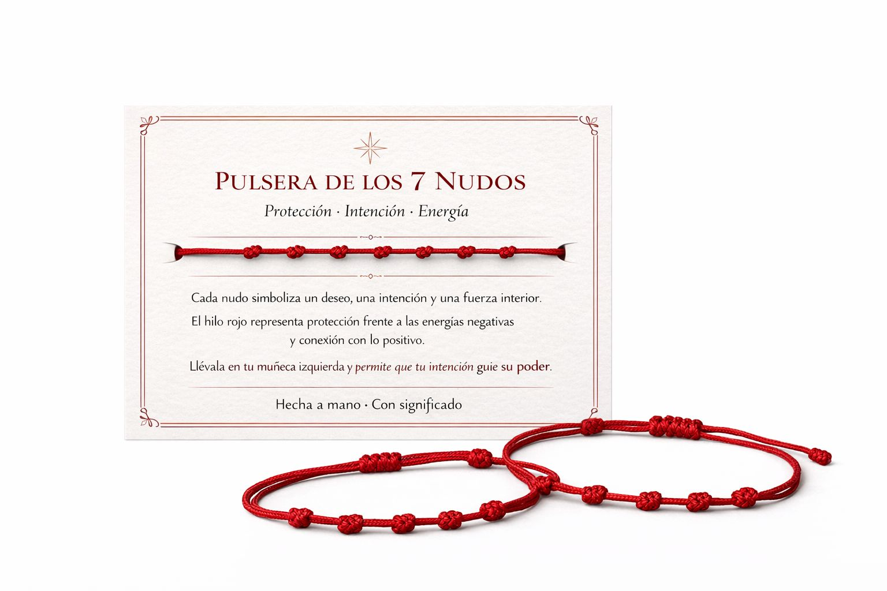

✦
Protección
Se utiliza como amuleto simbólico frente a energías negativas y como recordatorio de seguridad interior.
Un amuleto cargado de simbolismo, intención y protección, pensado para acompañarte cada día como recordatorio de fuerza, calma y buena energía.

La pulsera de los 7 nudos se asocia tradicionalmente con la protección, la intención personal y el deseo de atraer equilibrio y buena fortuna. Muchas personas la llevan como símbolo de conexión interior y como recordatorio diario de aquello que quieren reforzar en su vida.
Se utiliza como amuleto simbólico frente a energías negativas y como recordatorio de seguridad interior.
Cada nudo puede representar una unión con tus deseos, pensamientos y objetivos más importantes.
Muchas personas la relacionan con calma, arraigo y una sensación de armonía en el día a día.
Puedes llevarla a diario como complemento personal o como amuleto con significado especial.
Si quieres conservar toda la información y tenerla siempre a mano, abre la guía completa en PDF desde este botón.
Descargar guía PDF